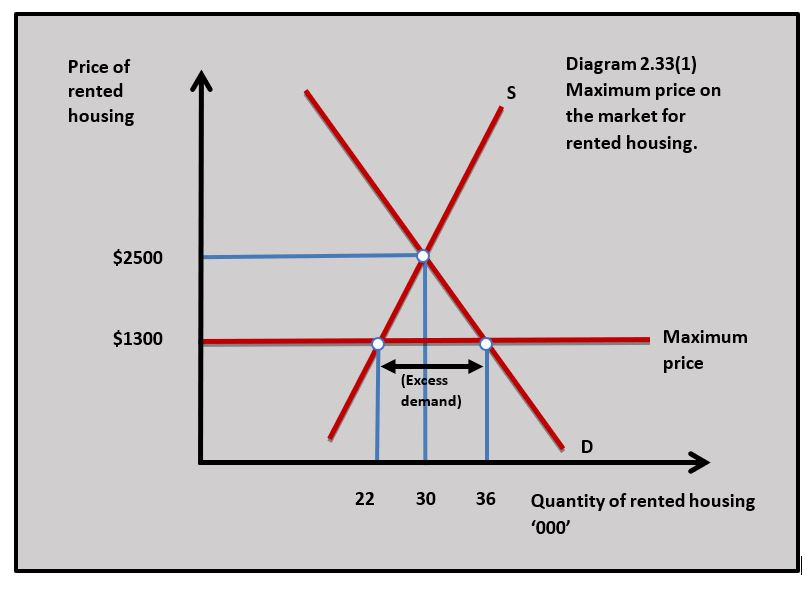
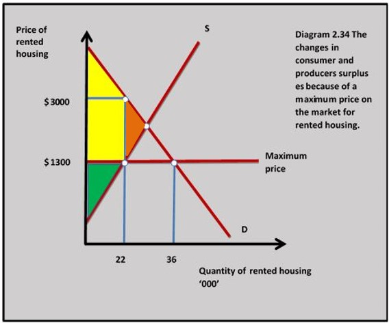
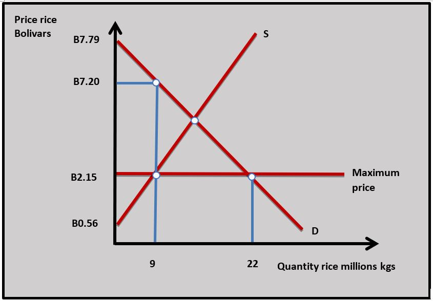
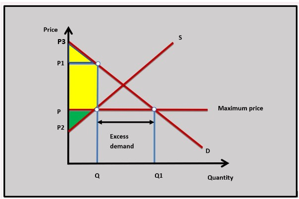
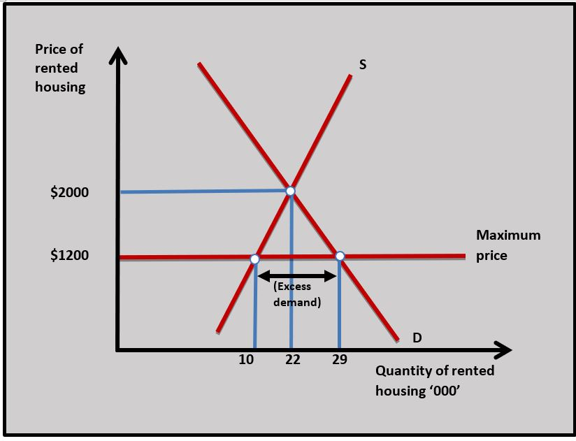
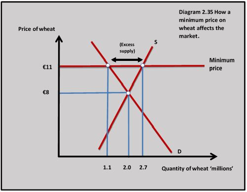
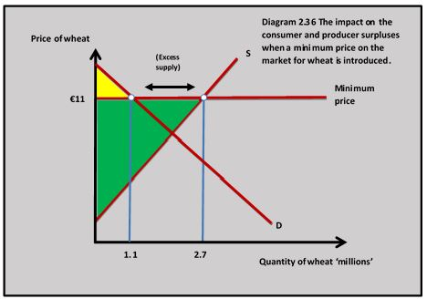
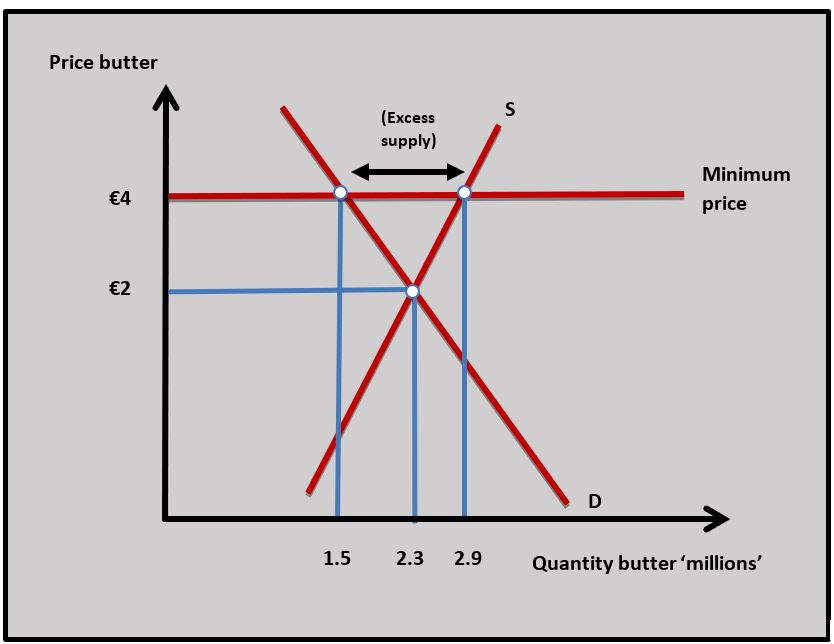
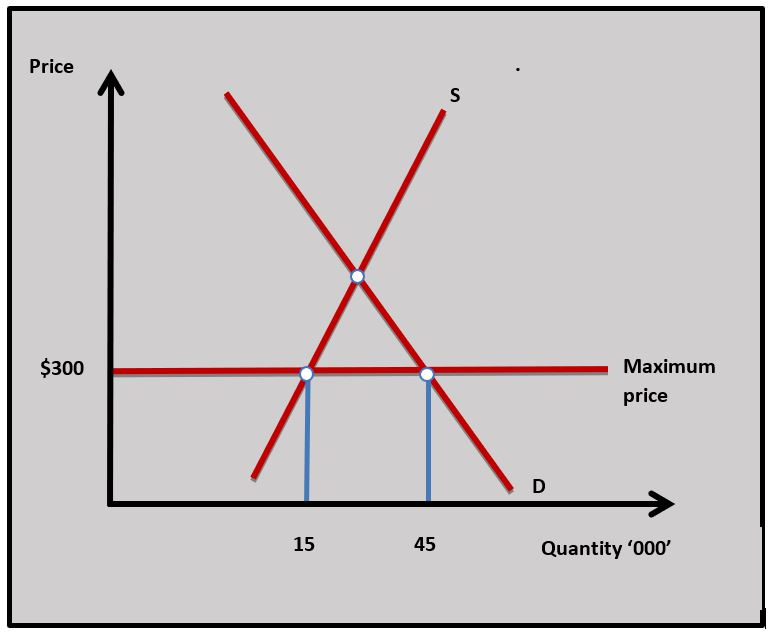
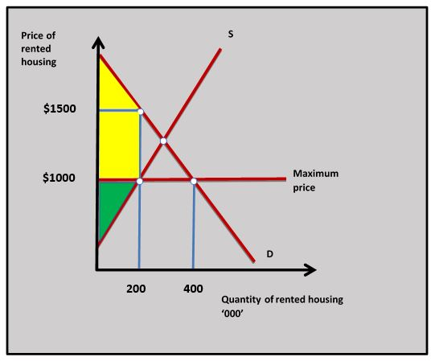

IB Docs (2) Team
IB Docs (2) Team

Unit 2.7(2): Governments in markets - price controls
In free markets where there is no government intervention, the price and output in a market are determined by demand and supply. Government seeks to intervene in markets when the market price and output do not maximise welfare in society. This could be a high price that negatively affects households on lower incomes or a low price that forces firms out of business in strategically important markets.
- Price controls
- Maximum prices
- Reasons for the use of maximum prices
- Effects of a maximum price on a market using graphical analysis
- Consequences of maximum prices for different stakeholders and welfare
- Minimum price
- Reasons for minimum prices
- Effects of minimum prices on a market using graphical analysis
- Consequences of minimum prices for different stakeholders and welfare.
Revision material
 The link to the attached pdf is revision material from Unit 2.7(2) Governments in markets - price controls. The revision material can be downloaded as a student handout.
The link to the attached pdf is revision material from Unit 2.7(2) Governments in markets - price controls. The revision material can be downloaded as a student handout.
Price controls
In free markets where there is no government intervention, the price and output in a market are determined by demand and supply. Governments often intervene in markets when the market price and output do not maximise welfare in society. This could be a high price that negatively affects households on lower incomes or a low price that forces firms out of business in a strategically important market.
Maximum prices (price ceiling)
Definition
A maximum price or price ceiling is a price set by a government or controlling authority to prevent the price of a good or service from rising above a fixed level. For example, rent controls in a housing market are a maximum price where market rents cannot rise above a certain price.
Reasons for maximum prices
Maximum prices are put in place to protect low-income consumers from prices rising in a market to a level they cannot afford. Maximum prices are normally put on goods that governments feel all people in society ought to be able to consume such as housing, basic food, healthcare and education.
Effects of a maximum price
One of the most famous maximum prices or price ceilings are rent controls in New York City. Rent controls have existed in the city since the 1940s to protect low-income families. The number of houses and apartments subject to rent controls is around 22,000 at present with an average rent of about $1,300 per month. The average market rent would be around $2,500 per month.
Diagram 2.33(1) illustrates the impact of a maximum price on rents in the New York housing market.

Empirical evidence of the effects of a maximum price set below the equilibrium price would be:
- If the price falls in the market from $2500 to $1300, the quantity demanded increases from 30,000 units to 36,000 units because of the income and substitution effects (more people can afford to rent and its cheaper to rent relative to buying a house).
- The decrease in price reduces the quantity supplied when landlords withdraw from the market because they make less profit and fewer landlords can cover their costs.
- Excess demand (shortages) for rented housing develops because the quantity demanded is greater than the quantity supplied of rented housing at the maximum price.
- The rationing function of price no longer works effectively. The price cannot rise to clear the market because of the price ceiling.
- Other methods of rationing develop such as: queueing (first come, first serve), preferential consumer selection (landlords rent to tenants they favour), regulations develop (landlords are forced to prioritise families) and lottery schemes develop (random selection of tenants).
- Parallel markets develop where consumers and producers try to find their way around the ceiling price controls. A landlord and tenant might officially agree on the rent ceiling of $1300 but also agree on a payment of $1000 per month to be paid unofficially.
- The quality of rented housing declines because landlords do not have funds to make repairs and maintain their properties as well as they could do at the equilibrium price.
- In the long-term new investment in rented housing falls because the market is not as profitable as it would be without the maximum price.
Impact on stakeholders
Consumers

The consumers who buy the good or service at a maximum price benefit because they pay a lower price than the equilibrium price. The gain in consumer surplus these consumers receive is shown by the yellow shaded area in diagram 2.34. Some consumers who would have paid the market price and cannot buy the good at the maximum price because of a shortage lose out. Consumers may also lose out because of the time they might spend queueing for a good that is in short supply, or they might encounter extra regulations resulting from the price ceiling. Some consumers might enter the parallel market where they might have to pay a very inflated price and risk breaking the law.Producers
Producers lose producer surplus when there is a maximum price because they receive less revenue and profit from selling their good or service. For the landlords in the rented housing market, the producer surplus is the green shaded in diagram 2.34 which is smaller than the producer surplus at the normal market equilibrium price. Some producers will leave the market when there is a maximum price and their producer surplus disappears. It is, however, possible for some fringe producers to enter the parallel market and make high profits from selling their good illegally.
Governments
Governments have the cost of setting up and enforcing the maximum price, as well as the loss of tax revenue that might come from lower sales in the market (although the good may not be subject to tax). There are, however, some political benefits from setting a price ceiling because it looks like an effective policy that reduces prices. This is why governments are often tempted to use them.
Welfare
Maximum prices lead to a loss of welfare because of the loss of consumer surplus of consumers who no longer buy the good when the maximum price is imposed. This is shown by the brown shaded area in diagram 2.34. There is also a welfare loss of the producer surplus from producers who leave the market as a result of the maximum price. This is shown by the brown shaded area in diagram 2.34.
Empirical evidence suggests maximum prices tend to lead to a loss of welfare because the benefits of the maximum price are concentrated amongst a relatively small number of consumers and there are wider dispersed costs on the rest of society. In New York, a relatively small number of tenants (sometimes wealthy) benefit from the maximum price, but many potential tenants lose out, landlords see a fall in profits and the government (taxpayers) have to pay for the system.
The planned economies of Eastern Europe used maximum prices across the markets for many goods up until the late 1980s when, one by one, they transitioned to market-based economies. Hugo Chavez’s government in Venezuela, however, brought in maximum prices on many necessity goods in 2003 to try and support poorer households in the country. These included price ceilings on cooking oil, white rice, sugar, coffee, flour, margarine, pasta and cheese. These controls were extended to other goods over the years.
The price controls went down badly with many businesses, especially when they are set below the costs of production. A maximum price of 2.15 Bolivars was placed on a kilo of rice when the cost of producing a kilo of rice was 4.41 Bolivars. Queueing became a daily part of life for Venezuela’s consumers, who would spend long periods waiting in line for their daily shopping.
In 2013 there were incredible scenes when the army was called in by the state to manage an electrical store the government believed was selling goods such as washing machines and televisions at prices that were too high. Some of the managers were arrested for breaking the maximum price regulations.
 Worksheet questions
Worksheet questions
Questions
a. The diagram shows the impact of a maximum price (price ceiling) on the price of rice in Venezuela.

(i) Outline a reason why the Venezuelan government might have used a maximum price on rice. [2]
Rice is a necessity good that important to sustain the diet of low-income households in Venezuela.
(ii) Calculate the excess demand for rice in Venezuela. [2]
22 million kgs - 9 million kgs = 13 million kgs
(iii) Calculate the consumer surplus for rice in Venezuela. [2]
(B7.20 - B2.15 x 9 million kgs) + (B7.79 - B7.20 x 9 million kg / 2) = B45.45 million + B2.66 million = B48.11 million
(iv) Calculate the producer surplus for rice in Venezuela. [2]
B2.15 - B0.56 x 9 million / 2 = B7.16 million
(v) Explain how the maximum price for rice in Venezuela changes the rationing function of price. [4]
The rationing function of price means that at the equilibrium price in the market for rice in Venezuela where demand equals supply every buyer who has effective demand for rice can buy the good and every producer who has an effective supply of rice can sell the good. When the maximum price on rice is introduced price can no longer ration the good because the quantity demanded is greater than the quantity supplied and the price cannot rise to allow the market to clear.
b. Explain the effects on consumers, producers, and the government of a maximum price (price ceiling) introduced in the market for a good. [10 marks]
- Definitions of maximum price and market.

- A diagram to show the impact of a maximum price on a market and the effect this has on consumers and producers. The diagram shows the consumer surplus (yellow area) and producer surplus (green area) after a maximum price is used in the market for a good.
- An explanation that a maximum price reduces the price of a good to consumers and leads to an increase in the consumer surplus of the consumers who are still able to buy the good with a maximum price.
- An explanation that a maximum price can cause excess demand in the market for a good which leads to shortages and other methods of rationing such as queueing which has an adverse effect on the consumer.
- An explanation that a maximum price reduces the producer surplus of firms that supply the market, and this can lead to business failure and unemployment.
- An explanation that a maximum price will need to be enforced by the government which leads to bureaucracy and increased costs. There could also be a policing cost if a parallel market develops.
- An example of where a maximum price has been imposed on a market such as price controls in the food market in Venezuela.
c. Evaluate the effectiveness of a maximum price (price ceiling) as a way of making a good more affordable to low-income households. [15]
Answers should include:

- Definition of maximum price.
- A diagram to show the impact of a maximum price of a good or service. In this case, rented housing.
- An explanation that a maximum price on rented housing in New York reduces the price of rented housing for low-income households and that this is important because housing is a necessity good.
- An example of rented housing - in this case in New York.
Evaluation might include coverage of the problems of using a maximum price such as shortages in the market, failure of the rationing function of price, development of a parallel market and corruption, the cost to the government of enforcing the policy, decline in the quality of rented properties and reduced long-term investment in the housing market.
Investigation
Research into goods and services which have been subject to maximum prices and discuss with your class the consequences.
Minimum prices (price floors)
Definition
A minimum price or price floor is a lower limit set by the government or controlling authority to stop the price of a good or service from falling below a certain level. Minimum prices have been used in the past in agricultural markets, although they are not used as much today. There are, however, still examples of minimum prices in agriculture in India on Kharif (autumn) crops. These are crops such as maize and rice.
Reasons for minimum prices
Governments use minimum prices or guaranteed minimum prices to protect producers in markets. This is often the case in agricultural markets where governments look to support farmers and protect the food supply. Producers in agricultural markets often struggle because of unstable prices because of the impact of the weather on their output. A price floor aims to offer them a more stable income.
Effects of minimum price (price floor)

The European Union used minimum prices as part of their Common Agricultural Policy (CAP) in the 1970s and 80s. Diagram 2.35 is an example of how minimum prices might work in the market for wheat. In this example, the equilibrium price for wheat is €8 per bushel with 2 million units of output. A minimum guaranteed price is put in place at €11.Empirical evidence of the effects of a minimum price set above the equilibrium price would be:
- As the price rises from €8 to €11 the quantity demand for wheat falls to 1.1m bushels. As the price increases quantity demanded decreases because of the income and substitution effects. Wheat is now less affordable, and buyers switch to cheaper alternatives.
- Quantity supplied increases to 2.7m bushels because the higher price increases producer profits and covers the costs of higher production.
- At the minimum price, the quantity supplied is greater than the quantity demanded and there is excess supply or surplus output. In diagram this is (2.7m – 1.1m = 1.6m units).
- To maintain the minimum price the government or buying authority needs to purchase the surplus and put it into storage. If the surplus is allowed onto the market the price will fall – hence the term guaranteed price. The cost of the government intervention is 1.6m x €11 = €17.6m
- The wheat needs to be stored and this is an additional cost of the scheme. This can be particularly expensive for goods that need to be refrigerated.
- Additional agricultural producers are attracted to the market by the minimum price which leads to an increase in excess supply in the long run and reduces supply in other markets.

Impact on stakeholdersConsumers
Consumers lose out when a minimum price is set above the equilibrium price because they need to pay a higher price for the good and their consumer surplus falls. The loss of consumer surplus from the minimum price put on wheat is shown in diagram 2.36. The yellow shaded area shows the new consumer surplus following the increase in price from €8 to €11. The increase in the price of agricultural products affects poorer consumers badly because buying food is often a high proportion of their household expenditure.
Producers
Producers gain when a guaranteed minimum price is above the equilibrium price because their producer surplus increases. This means they will receive higher revenues and profits. The increase in producer surplus is shown by the green shaded area in diagram 2.36. In the wheat market, this may well fulfil the government’s aim of stabilising farming incomes and maintaining long-term food supply.
Government
Minimum prices represent an opportunity cost to the government. The government or the authority buys the excess supply and has the considerable cost of purchasing the good, as well as the cost of storing any excess supply and managing the system.
Welfare
Minimum prices are not used very much anymore because they were expensive for the government to manage and the benefits of the system were less than its costs. They often led to a misallocation of resources in agriculture markets with huge surpluses developing at the expense of reduced production in other markets. There was also considerable waste with excess supply being destroyed when it could not be sold. In some instances, the European Union sold excess supplies to developing countries with disastrous effects on their farmers when prices fell in their markets. Like maximum prices, the gains tended to be concentrated amongst a certain group of stakeholders - in this case, producers, with dispersed losses for consumers and taxpayers.
Hewitt’s is a family-managed farm 15km South-West of Dublin. In the mid-1970s it started to receive a guaranteed minimum price for butter as part of the European Common Agricultural Policy (CAP). The farm saw this as a huge opportunity as the price they were receiving as part of the CAP was nearly 35 per cent above the previous market equilibrium price. It was a good time for the farm - revenues and profits increased significantly. To exploit this increase in price Hewitt’s increased output and bought more cows to add to their herd.
Over the next few years, Hewitt's turned land previously used for arable farming over to dairy farming. As the owner Arthur Hewitt said, ‘everything we produced was sold at a great price – goodness knows where it all ended up’.
Worksheet questions
Questions
a. Define the term minimum price. [2]
A minimum price or price floor is a lower limit set by the government or controlling authority to stop the price of a good or service from falling below a certain level.
b. Explain two reasons why governments use minimum prices (price floors) in agricultural markets. [4]
- Governments use minimum prices in agricultural markets to support producers in the market.
- Agrisultural markets need to be protected to make sure there is a secure food supply in the country.
b. Explain the implications for different stakeholders on a minimum price in an agricultural market. [10]
Answers should include:

- A definition of a minimum price.
- A diagram to show the impact of a maximum price on an agricultural market such as butter. This is shown in the diagram with a minimum price for butter at 4 euros.
- An explanation that the minimum price on butter will increase the price for consumers and lead to a reduction in their consumer surplus, which will be particularly damaging for low-income consumers.
- An explanation that the minimum price will increase the price producers of butter will receive and will lead to an increase in their producer surplus and this should help to guarantee butter supply.
- An explanation the government will need to intervene in the market to buy up any excess supply to stop it from coming onto the market and cause prices to fall. This will lead to an opportunity cost to the government in terms of other areas of expenditure.
Investigation
Investigate the way the European Union currently supports agricultural producers.
Maximum prices or price ceilings raise interesting questions about the key concept of equity. Rent controls in New York are designed to make housing affordable to households of low incomes in the city. Without adequate housing, if is very difficult for anyone to have the opportunity to achieve a good standard of living. For example, having a decent place to live is an important part of sustaining employment. The problem with rent controls in New York is they have often provided low-cost housing for people on high incomes which is at odds with the objective of achieving greater equity.
Rather than a price ceiling, what would be a more effective way of achieving greater equity in the housing market?
Which of the following is a reason for a government to impose a maximum price?
Maximum prices are normally used to make necessity goods more affordable to households on low incomes.
Which of the following is an unlikely outcome of a price ceiling?
A price ceiling or maximum price leads to a fall in producer surplus as firms receive a lower price for their good or service.
Why does society's welfare tend to fall when there is a maximum price?
A welfare loss happens in society when the costs to society of a decision are greater than the benefits.
Which of the following is not true when a minimum price is in place in a market?
When there is a maximum price above the equilibrium price there is a fall in consumer surplus.
Which of the following outcomes is most likely when a price floor operates in a market?
A minimum price often increases producer revenues and profits which attracts more producers into the market.
Using the information in the price ceiling diagram, which of the following is not true?

The maximum price reduces the price received by producers in the market and decreases their surplus.
The table shows demand and supply data for bread in an economy. The government sets a maximum price at
| Price | Quantity supplied units | Quantity demanded units |
| 200,000 | 150,000 | |
| 160,000 | 160,000 | |
| 120,000 | 170,000 | |
| 80,000 | 180,000 |
Which of the following statements is true?
At the maximum price QD 170,000 - QS 120,000 = 50,000
The data in the table shows the demand and supply for milk. A minimum price of
| Price | Quantity supplied units | Quantity demanded units |
| 2 million | 1.8 million | |
| 1.7 million | 1.6 million | |
| 1.4 million | 1.4 million | |
| 1.1 million | 1.2 million |
Which of the following statements is not true?
The cost of the intervention is (2 million - 1.8 million) x
Which of the following is true when a minimum price is put in place in a market?
The diagram shows a maximum price on rented housing.

Which of the following is not true in the diagram when the maximum price is imposed?
The excess demand is 400,000 - 200,000 = 200,000 units
 Twitter
Twitter
 Facebook
Facebook
 LinkedIn
LinkedIn